Kaleido
A vision poster study for primary school Kaleido. An earlier proposal made by a colleague leaned too heavily on the logo, and forgot the message. I borrowed shapes from the already graphic logo, and also turned them into characters, adding the warmth and closeness the school was looking for. The concept works, though the style doesn’t yet match the clean lines of the logo. The school loved these first versions and chose to build on them.
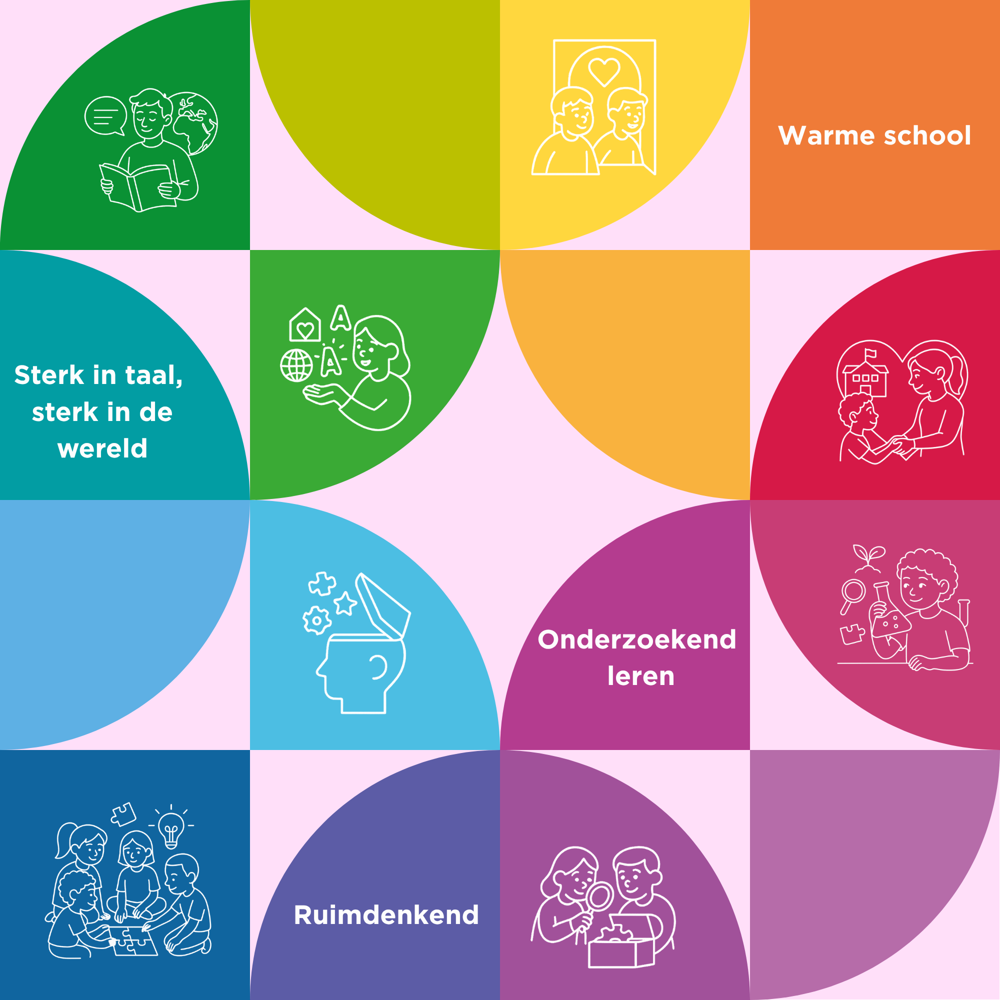
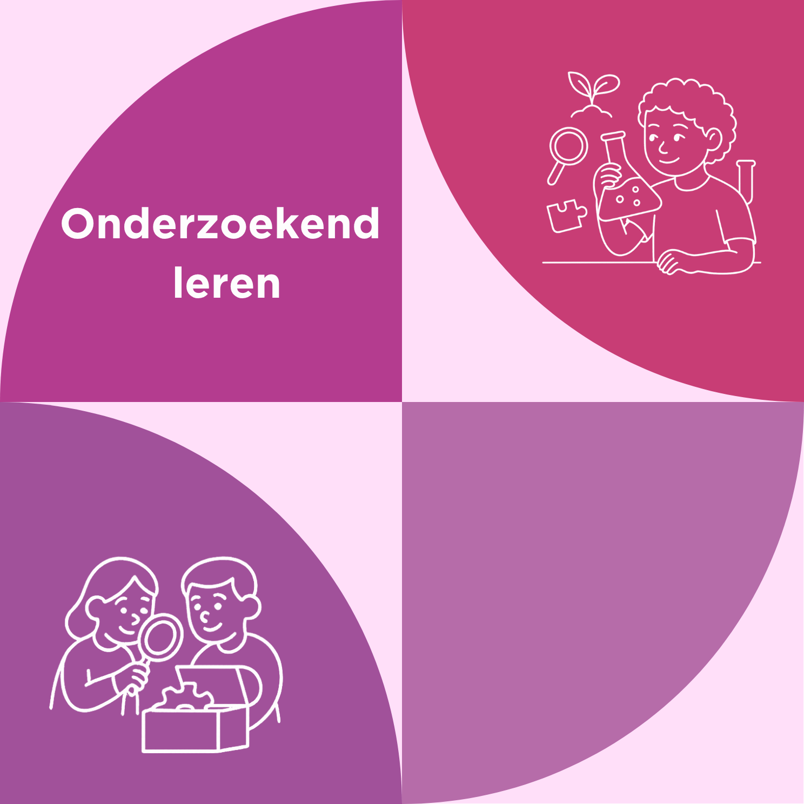
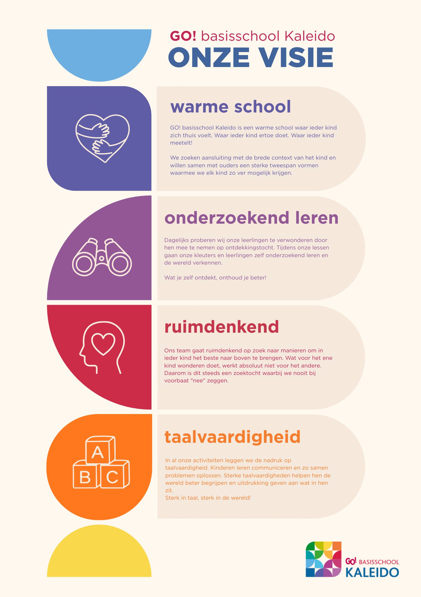
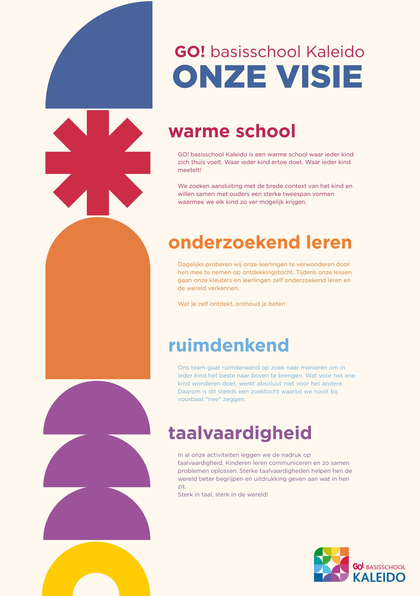
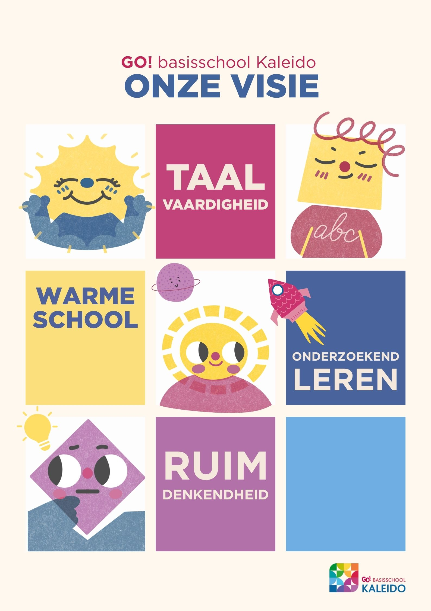
Spectrum
A vision poster for Spectrum, bringing their motto “From the head, from the heart. For myself, for others, but always together” to life. With a highly diverse group of pupils, the design had to be tangible and inclusive. After animals and puzzle pieces proved too obvious, I created a family of soft, rounded blobs in the logo’s colours. Alongside the poster, I delivered ready-to-adapt templates and a character kit with faces, hands and feet, so the school can keep growing the blob family on its own. The result was met with great enthusiasm.
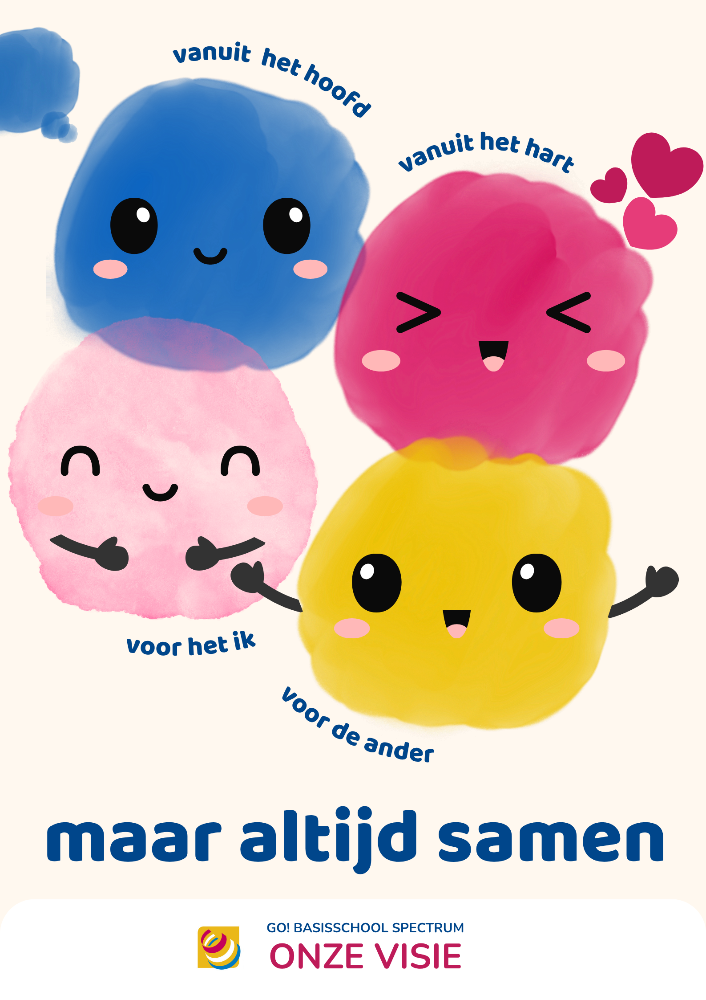
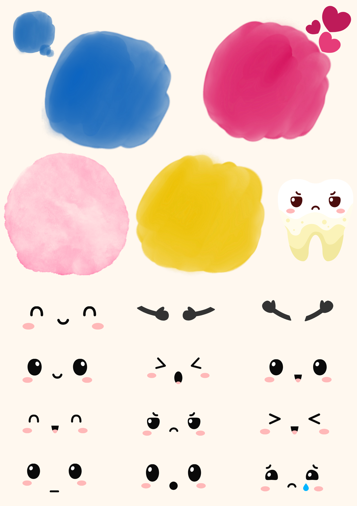
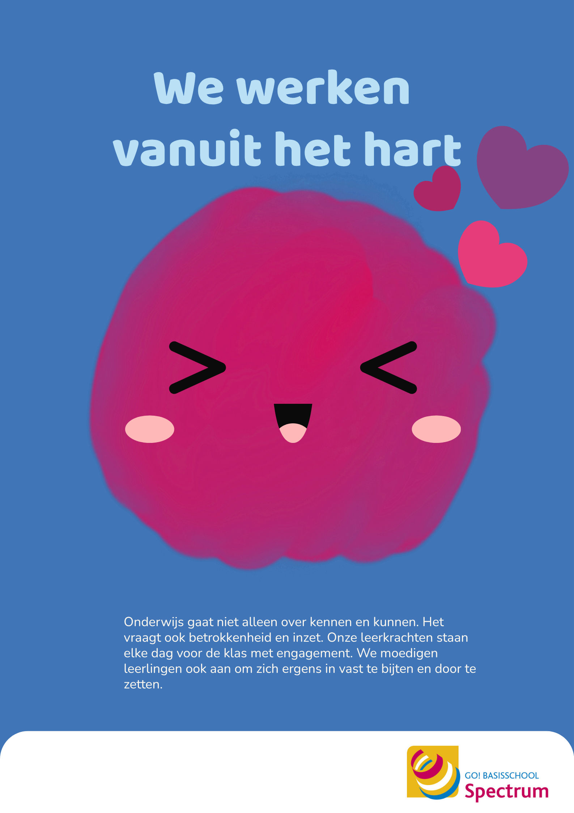
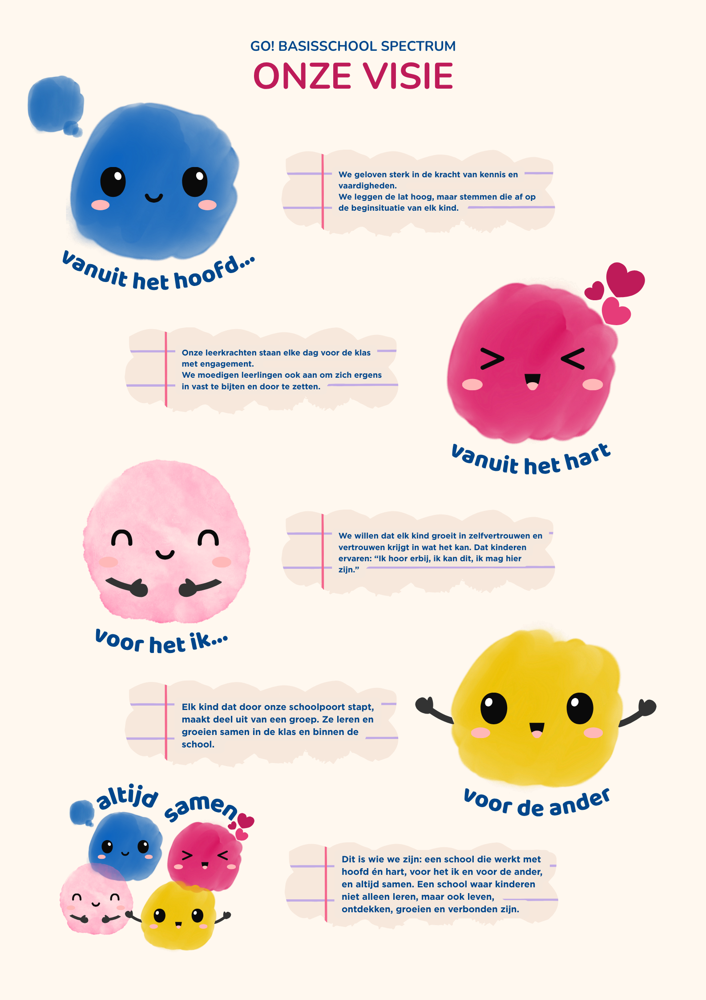
De Vleugel
De Vleugel, a primary school, loved its vision poster, but the text blocks were hard to read, especially online. I moved most of the text out of the image and onto the page itself, added a legend to clarify the colour coding, and boosted the contrast for better legibility. The bird and rounded corners from the school’s logo tie the design back to its identity.
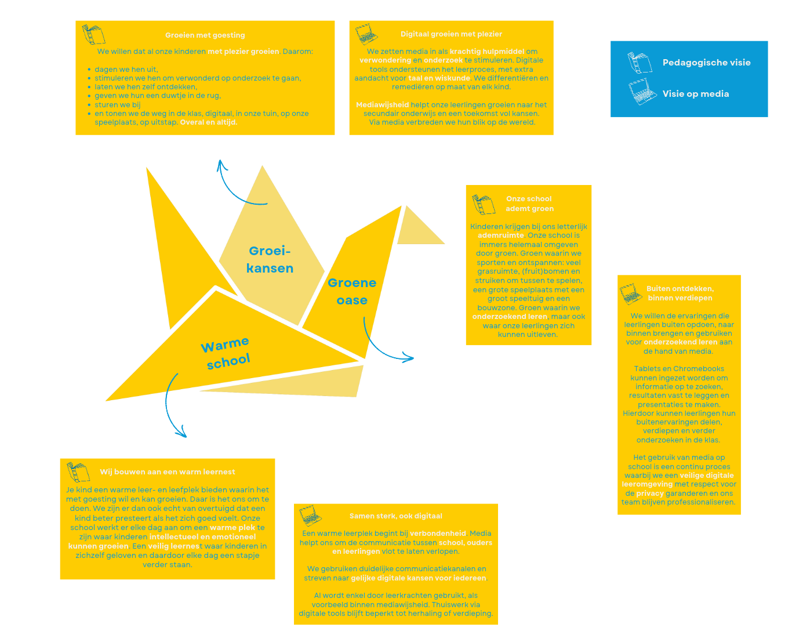
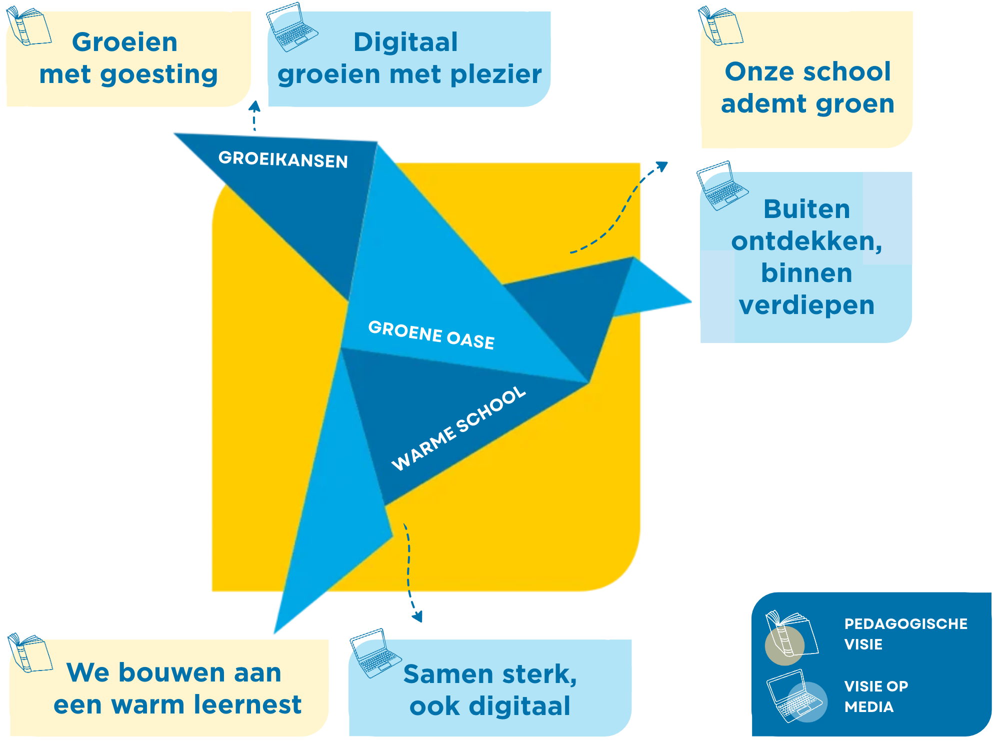
't Kasteeltje
A job posting for a new principal at primary school ‘t Kasteeltje. Because it ran on SCOOP’s channels, the design is rooted in SCOOP’s visual identity, while touches of the school’s own colours help its logo blend in seamlessly. Photos from the school’s website complete the picture, reflecting the warm atmosphere ‘t Kasteeltje is known for.